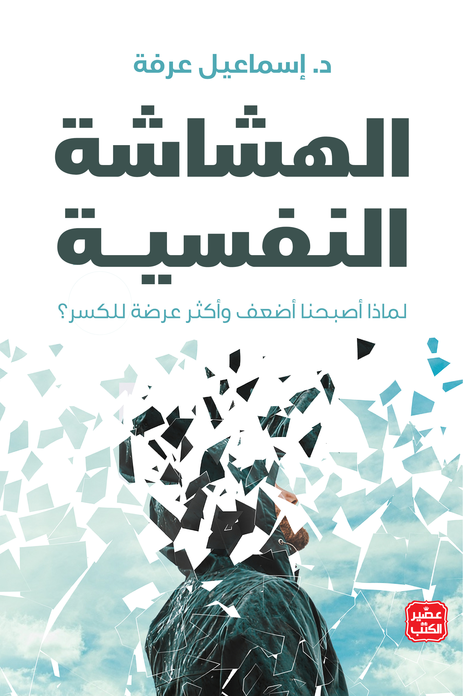
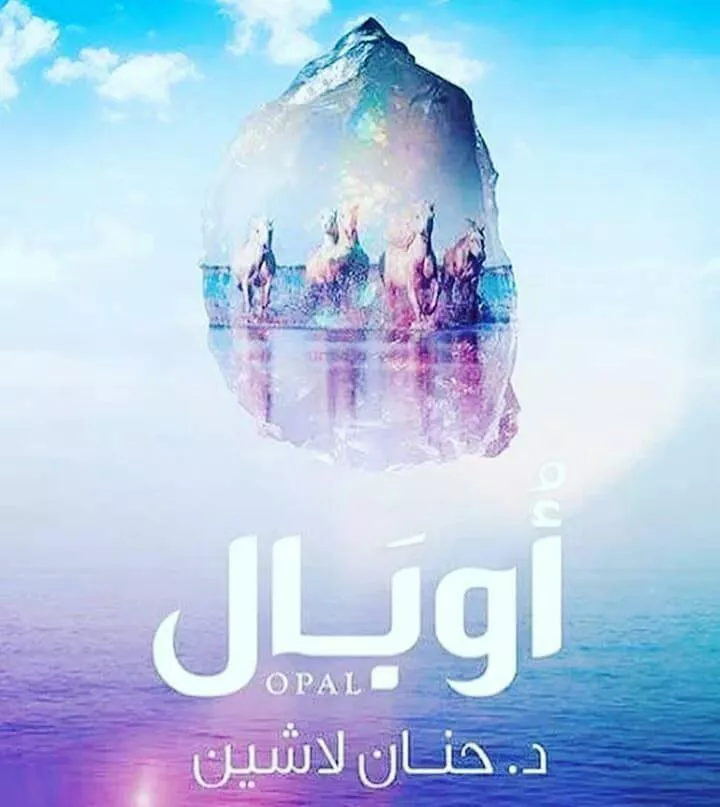
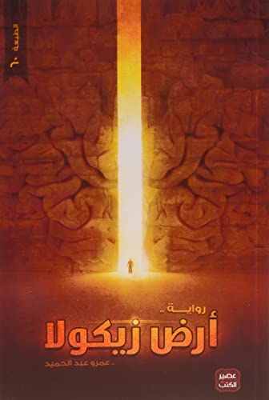
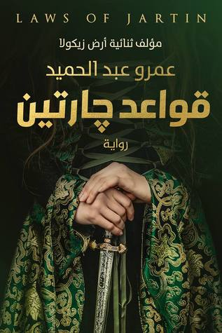
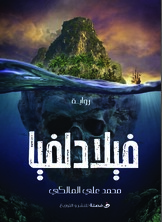
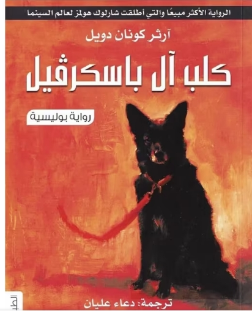

| السلام عليك يا صاحبي | ||
|---|---|---|
| الكتاب | المؤلف | السعر |
|
السلام عليك يا صاحبي |
أدهم شرقاوي كاتب فلسطيني ولد ونشأ في مدينة صور اللبنانية حاصل على دبلوم تربية رياضية من كلية التربية وإجازة وماجستير في الأدب العربي من الجامعة اللبنانية في بيروت. عمل في صحيفة الوطن القطرية بدأ بالكتابة عبر منصة منتدى الساخر ثم أصدر أول كتاب له عام ٢٠١٢ بعنوان أحاديث الصباح. يعرف بين محبينه بقس بن ساعده وذلك هو الأسم الذي يستخدمه دائماً في في نشر كتاباته. |
4jd.jpeg) |
وصف الكتابيا صاحبي ليس كل من واساكَ خاليًا من الحزن لعله عرف معنى أن يحزن المرءُ ولا يجد أحدًا يواسيه ولا كل من أعطاكَ ثريٌّ لعله عرف جيدًا معنى أن يحتاج المرء ولا يجد ولا كل من ربَت على كتفك ليس له هَمٌ :لعله أراد أن يدعو بطريقةٍ أخرى، فيقول صامتًا وهو يُطبطب عليكَ ها أنا أربتُ على أكتاف الناس فاربِت على كتفي يا الله |
||
| نظرية الفستق | ||
.jpeg) نظرية الفستق |
.jpeg) فهد عامر الأحمدي الحربي (28 سبتمبر 1967)، هو كاتب سعودي صاحب عامود حول العالم في جريدة الرياض. بدأ كتابة المقالة في جريدة المدينة، وفي 17 أغسطس 1991م نشر أول مقال له بعنوان "انف.جار سيبيريا" قبل أن ينتقل إلي جريدة الرياض وينشر أول مقال له في 21 سبتمبر 2000م, ولا يزال كاتباً يومياً في جريدة الرياض. ويعد الكاتب الأعلى أجرًا على مستوى الكتاب السعوديين حاليًا. |
6.5jd |
وصف الكتابجمع الكتاب العديد من المقالات التي تخص تطوير الذات و أدوات البرمجة اللغوية العصبية وإعادة تنظيم وبلورة الانسان بعالمه و ما يستطيع أن يقوم به من سلوك منظبط تجاه مستقبله و سلوكه كإنسان متحضر تجاه البيئة المحيطة ليعود عليه بالنفع المطلوب. تمت صياغة الكتاب ليفتح المجال للقارىء ليكون متفاعلا مع أسلوب الكاتب لا مجرد متلقي يلقن امور يدعي كاتبها انها صحيحة فقط, و عليه كل من يقرا الكتاب يخرج بعادة التغلغل داخل المواضيع ليعيش نفسه و وضعه فيها كما لو كانت تفتح أبوابًا من عوالم الخيال الخصب الذي يمكن تحويله إلى حقيقة مطلقة و قد تحقق هذا الهدف بالفعل, بعد اتمام الأمر بسرد بعض القصص الهامة والتي تمس حياة الناجحين من الناس حتي تكون حافزا للقارىء في أخذها قدوة لحياته |
||
| ملهمون | ||
.jpeg) ملهمون |
.jpeg) صالح بن محمد الخزيم كاتب سعودي. صدر له كتابان، الأول بعنوان "ملهمون" عام 2016، والثاني بعنوان "عليُّون" عام 2017. |
5jd 4.5jd |
وصف الكتابإن النجاح ليس عطية تعطى، ولا منتجاً يشترى، ولا إرثاً يورث، بل هو نتاج عمل جبار وسهر بالليل والنهار، وتدريب وإصرار، وتجاوز للعقبات، حتى تم تحقيقه بعد توفيق الله. وعلى مر العصور القديمة والحديثة وجد عظماء وعصاميون ناجحون لم يأتهم النجاح صدفة ولم يحصلوا عليه مجاملة، بل بلغوا منازله بإرادتهم الصلبة وهمتهم العظيمة وكافحوا حتى كتبت أسمائهم في سجلات التاريخ. وها أنا قد وضعت لك في هذا الكتاب العديد من القصص الملهمة التي أتمنى أن تزيد من تفاؤلك وإصرارك وتشعل حماسك وتقوي همتك وتهديك إلى الطريق الصحيح |
||
| لا تكن لطيفا أكثر من اللازم | ||
.jpeg) لا تكن لطيفا أكثر من اللازم |
.jpeg) مؤلف أمريكي له عدة كتب في مجال التنمية بالبشرية أهمها كتابه لا تكن لطيفاً أكثر من اللازم. |
3.5jd |
وصف الكتابتأمل الكاتب في تأثير الشخصية اللطيفة على ذاته, وبادراك جديد بدأ يحدد أكثر سلوكياته الانهزامية: كان عادة يقول نعم للناس حينما ينبغي أن يقول لهم لا, و كان باستمرار يعزل نفسه عن الآخرين بعدم إطلاعهم على ما يريد, و بالتظاهر بالهدوء بينما يكون غاضبا, و بالكذب عندما يخشى إيذاء مشاعرهم, و مرارا و تكرارا كان يثبط من عزمه بتحميل نفسه مسئولية أن يهتم بأمرهم حتى عند عدم المقدرة. |
||
| قوة الآن | ||
|
قوة الآن |
.jpeg) ولد اكهارت تول في مدينة ليونين الواقعة شمال دورتموند في منطقة الرور في 16 فبراير 1948هو متحدث وكاتب ألماني المولد كندي الموطن، هو مؤلف كتاب قوة الآن وكتاب A New Earth أو أرض جديدة. | 3jd 2jd |
وصف الكتابيهدف الكتاب لأن يكون دليلاً للحياة اليومية ويشدد على أهمية العيش في اللحظة الحالية وتجاوز أفكار الماضي والمستقبل بصورة مختلفة عن المعنى المتداول لعيش اللحظة الآنية المتمثل بالانغماس في الحياة والاستمتاع بها |
||
| لو كنت طيرا | ||
|
لو كنت طيرا |
.jpeg) سلمان العودة داعية إسلامي، ورجل دين، وأستاذ جامعي، ومفكر سعودي، ومقدم برامج تلفزيونية.ولد في جمادى الأولى 1376 هـ في قرية البصر الواقعة غرب مدينة بريدة في منطقة القصيم، حاصل على ماجستير في السُّنة في موضوع «الغربة وأحكامها»، ودكتوراه في السُّنة في شرح بلوغ المرام /كتاب الطهارة)، كان من أبرز ممن كان يطلق عليهم مشايخ الصحوة في الثمانينيات والتسعينيات. | 3jd |
وصف الكتابهمسات وشذرات، تجارب وخبرات، أحداث وعِبر، إشراقات ونفحات إيمانية، مُكَاشَفَات واعترافات، كلها كانت تغريدات جمعتها لك أخي الكريم لعلَّها تفيدك في دروب الحياة حتى في الليالي السوداء، تستضيءُ بها في ظلماتها وتُسَانِدُك في مواجهة العقبات الوهمية التي يصنعها البشر. فجدِّد حياتك وازرع الحياة بالأمل الذي لا يخبو المُقتبَس من جذوة الإيمان. |
||
| سيطر على حياتك | ||
|
سيطر على حياتك |
.jpeg) خبير التنمية البشرية والبرمجة اللغوية العصبية ورئيس مجلس إدارة المركز الكندي للتنمية البشرية، ومُؤسس ورئيس مجلس إدارة مجموعة شركات إبراهيم الفقي العالمية التي تتكون من (المركز الكندي لقوة الطاقة البشرية، المركز الكندي للتنويم بالإحياء، المركز الكندي للتنمية البشرية، المركز الكندي البرمجة اللغوية والعصبية). له مؤلفات تُرجمت إلى عدة لغات. درب أكثر من 600 ألف شخص في محاضراته حول العالم. من مؤلفاته: (إدارة الوقت، المفاتيح العشرة للنجاح). | 2.5jd |
وصف الكتابهذا الكتاب في لحظة ما تشعر أن حياتك تسير إلى غير الاتجاه الذي تريد.. تنظر إلى سنين عمرك السابقة فلا تشعر أنك قد فعلت فيها كل ما كنت تطمح إليه.. تنظر إلى ما هو قادم وتدعو أن يهبك الله القدرة والطاقة والقوة على أن تفعل فيها كل ما لم تستطع عمله. وتنجز فيها الكثير والكثير. هذا الكتاب قد كتب ليناسب الحالة التي أنت فيها. موجه إلى وجدانك وأحاسيسك يداعب شعورك وأمانيك.. هذا الكتاب أقرب لكتب التأملات. أو لنقل هو كتاب تحفيزي. يحدثك عن أهدافك في الحياة وتعاملك مع الوقت وكيفية التحكم في ذاتك.. واتخاذك للقرار. كتب لتلك الأوقات الهاادئة التي تحتاج فيها إلى من يعطيك بحنان ويسر وسهولة بعض المساحات الخالية للتأمل والتدبر.. وتقرير المصير.. |
||
| أربعون | ||
.jpeg) أربعون |
.jpeg) إعلامي وكاتب سعودي ومقدم برامج تلفزيونية. وهو مقدم السلسلة التلفازية الشهيرة خواطر والمضيف السابق لبرنامج يلا شباب. قدَّمَ برامج تلفازية حول مساعدة الشباب على النضج في أفكارهم والبذل في خدمة الإسلام وتطوير مهاراتهم واكتشاف معرفتهم بالعالم وبدورهم في جعله مكاناً أفضل.اشتهر الشقيري في السعودية والوطن العربي بعد سلسلة برنامج خواطر التي حقَّقت نجاحاً واسعاً نتيجة بساطة أسلوبها ومعالجتها لقضايا الشباب والأمة الإسلامية، والتي كانت دائماً تبدأ بمقولته: «لست عالماً ولا مفتياً ولا فقيهاً وإنما طالب علم.» | 8jd 6jd |
وصف الكتابكتاب أربعون للكاتب السعودي أحمد الشقيري ألّفه في أثناء خلوته لمدة أربعين يوماً في جزيرة نائية بعيداً عن الناس، وعن شواغل التكنولوجيا وملهيات الحياة. صدر عام 2018م عن دار الشروق في 267 صفحة. ويتحدث أحمد الشقيري عن خواطر وتجارب حدثت له في حياته وما الذي استفاد منها |
||
| الهشاشة النفسية | ||
|
 الهشاشة النفسية |
 صيدلي ومؤلف مصري، تخرج في كلية الصيدلة بجامعة الأسكندرية عام 2018م، له العديد من التقارير المنشورة بقسم رواق على موقع ميدان، ويعمل كباحث ومحرر. | 4jd |
وصف الكتابلهشاشة النفسية:هذه العملية هي عبارة عن حالة شعورية تعتريك عند وقوعك في مشكلة ما، تجعلك تؤمن أن مشكلتك أكبر من قدرتك على التحمل، فتشعر بالعجز والانهيار عند وقوع المشكلة وتظل تصفها بألفاظ سلبية مبالغ فيها لا تساوي حجمها في الحقيقة، وإنما هي أوصاف زائدة لا وجود لها إلا في مخيلتك، فيزيد ألمك وتتعاظم معاناتك، ثم ماذا؟! .. ثم تغرق في الشعور بالتحطم الروحي والإنهاك النفسي الكامل، وتحس بالضياع وفقدان القدرة على المقاومة تمامًا، وتستسلم لألمك وتنهار حياتك كلها بسبب هذه المشكلة. كما تتجلى الهشاشة النفسية في أشكال أخرى في تعاملاتنا اليومية: فنحن نعظم مشاعرنا ونجعلها حَكمًا نهائيًا على كل شيء تقريبًا ونقرر اعتزال كل ما يؤذي مشاعرنا ولو بكلمة بسيطة .. نكره نقد أفكارنا لأن النقد بالنسبة إلينا صار كالهجوم .. نعشق اللجوء إلى الأطباء النفسيين في كل شعور سلبي في حياتنا ونهرع إليهم طلبًا للعلاج .. لا نتقبل النصيحة ولا نرغب في أن يحكم أحدٌ علينا .. نلتمس العذر لأي خطأ أو إجرام بدعوى أن مرتكبه متأذي نفسيًا.. هذا الكتاب إذن يحلل ما يحدث لفئة من الشباب والفتيات الذين تأثروا بظاهرة الهشاشة النفسية، ثم يقدم الحلول العملية المقترحة لتقوية النفس وتدريبها على الصبر وتحمل المسؤولية. |
||
| لا نأسف على الازعاج | ||
|
لا نأسف على الازعاج |
أحمد خيري العمري هو كاتب وطبيب أسنان عراقي من مواليد بغداد في عام 1970،تعتبر مؤلفات العمري إضافة كمية وكيفية لفكر النهضة الذي يعتبر مالك بن نبي من أهم رواده. تمكن من حمل خطاب النهضة إلى فئة أوسع من الفئة التي توجه لها مالك بن نبي بسبب لغته المميزة وبيانه الواضح، إضافة إلى أن اعتماده على التأصيل القرآني للنهضة جعل من أفكاره أكثر قبولاً. | 6jd 4.5jd |
وصف الكتابهل تذكر يا صديق؟ يوم كنت غارقاً في إحساسك بالفشل؟ في إحساسك بأنك لا تصلح لشيء.. هل تذكر يوم مددت يدي لأهزك بعنف؟.. كنت أقول لك إني أرى فيك، رأي العين، شخصاً ناجحاً متألق النجاح، شخصاً يثير غيظ الحاسدين بنجاحه.. لا.. لم أكن أطلع على الغيب.. لقد كنت أؤمن بالله فحسب.. ولأني أؤمن بالله، فقد آمنت بك ذات يوم.. لأني أؤمن بالله، فإني كنت أعرف أن لديك ما يجعلك تنجح.. أؤمن بالله، وأؤمن بمن اختاره الله خليفة.. بالإنسان.. ولكني أعرف أيضاً أن الإنسان قد يتمادى، كما قالت الملائكة ذات يوم.. كلانا نعرف ذلك الآن.. هي معادلة دقيقة جداً.. عندما لا يكون إيمانك بنفسك جزءاً من إيمانك بالله، فإنك قد تتمادى.. عندما تفصل الإيمانين عن بعضهما، فإنك غالباً ستفسد في الأرض، بطريقة أو بأخرى.. رغم كل ذلك.. لا أزال أؤمن بالإنسان.. لأن إيماني به هو جزء من إيماني بالله |
||
| ليطمئن عقلي | ||
|---|---|---|
| الكتاب | المؤلف | السعر |
|
ليطمئن عقلي |
أحمد خيري العمري هو كاتب وطبيب أسنان عراقي من مواليد بغداد في عام 1970،تعتبر مؤلفات العمري إضافة كمية وكيفية لفكر النهضة الذي يعتبر مالك بن نبي من أهم رواده. تمكن من حمل خطاب النهضة إلى فئة أوسع من الفئة التي توجه لها مالك بن نبي بسبب لغته المميزة وبيانه الواضح، إضافة إلى أن اعتماده على التأصيل القرآني للنهضة جعل من أفكاره أكثر قبولاً. |
11jd 9jd |
وصف الكتابكتاب ليطمئن عقلي الإيمان من جديد، بمواجهة إلحاد جديد تأليف أحمد خيري العمري .. هذا الكتاب ليس موجها للملحدين. على الأقل ليس للملحدين الذين حسموا أمرهم بالإلحاد دون أي أسئلة إضافية أو مزيدا من البحث. وهو أيضا ليس للمؤمنين الذين يعتقدون أنهم يملكون كل الأجوبة " النموذجية" التي لا تحتاج لتحديث أو تحوير... ولا للمؤمنين الذين يعتقدون أن لا أسئلة هناك أصلا. باختصار: هو ليس للمطمئنين عموما، من الجانبين النقيضين. لا لِمَنْ اطمأن إلى أن إلحاده هو الوضع الصحيح، ولا لِمَنْ اطمأن إلى إيمانه وثباته وعدم حاجته إلى حصانة " عقلية" من نوع ما. لا يستوي هذان النقيضان بالتأكيد، والثاني منهما " نغبطه" على ما هو فيه.. لكن هذا لن يغير من حقيقة أن الكتاب ليس موجها له أيضا... هذا الكتاب ليس لهؤلاء ولا لأولئك بالتأكيد. |
||
| كيمياء الصلاة | ||
.jpeg) كيمياء الصلاة |
أحمد خيري العمري هو كاتب وطبيب أسنان عراقي من مواليد بغداد في عام 1970،تعتبر مؤلفات العمري إضافة كمية وكيفية لفكر النهضة الذي يعتبر مالك بن نبي من أهم رواده. تمكن من حمل خطاب النهضة إلى فئة أوسع من الفئة التي توجه لها مالك بن نبي بسبب لغته المميزة وبيانه الواضح، إضافة إلى أن اعتماده على التأصيل القرآني للنهضة جعل من أفكاره أكثر قبولاً. |
15jd |
وصف الكتابكتاب يتحدث من منظور اخر يتكون من اربع اجزاء; المهمة غير المستحيلة,ملكوت الواقع,عالم جديد ممكن ,فيزيا المعاني,سدرة المنتهى. |
||
| لأنك الله | ||
|
لأنك الله |
يعمل كمحاضر في قسم الشريعة و اللغة العربية في كلية البرامج المشتركة بالمحالة ، و قد ألتحق بالجامعة عام 1435 هجريا ، و هو حاصل على بكالوريوس في تخصص العودة ، هذا إلى جانب حصوله على درجة الماجستير في تخصص الدعوة و الإحتساب ، و له العديد من الأبحاث العلمية المتميزة ، ومؤلف كتاب لأنك الله |
4jd |
وصف الكتابكتاب يتحدث عن بعض أسماء الله الحسنى وكيف نعيشها في حياتنا حرص المؤلف أن يكون الكتاب مناسباً لمن هم متوسطي الثقافة، ويكون ناسباً للمحتاج و المريض و السليم |
||
| استرداد عمر | ||
.jpeg) استرداد عمر |
هو كاتب وطبيب أسنان عراقي من مواليد بغداد في عام 1970،تعتبر مؤلفات العمري إضافة كمية وكيفية لفكر النهضة الذي يعتبر مالك بن نبي من أهم رواده. |
6jd 5jd |
وصف الكتابآن لنا أن نخرج عمر بن الخطاب من خانة كتب السيرة على رفوف المكتبة ، إلى مسيرتنا اليومية.. إلى حياتنا.. آن لنا أن نخرج فهم عمر بن الخطاب للقرآن، وللسنة النبوية من كتب التاريخ إلى التطبيق العملي.. الفهم العمري للقرآن والسنة، في مرحلة دقيقة جدا من التاريخ الإسلامي، هو الذي مد هذا التاريخ أفقيا وعموديا، أفقيا في فتوحات البلدان، عموديا في آفاق العدالة والبناء والنهوض… لا يمكن أن نزعم أن هذا الفهم العمري هو الفهم الوحيد الصحيح للقرآن والسنة.. ولكننا نزعم أن هذا الفهم، الذي ساهم في صنع الحضارة الإسلامية، هو ما نحتاجه اليوم تحدديدا، من بين كل الأفهام التي قد تكون مناسبة في مراحل تاريخية أخرى.. اليوم، في هذا الدرك الذي وصلنا له، في تطلعنا للخروج منه، نحتاج إلى فهم عمر، إلى رأس عمر، إلى رؤية عمر، للخروج مما نحن فيه نحو مستقبل ناهض… نحو القيام بما خلقنا من أجله.. نحتاج إلى فهم عمر تحديدا، في هذه المرحلة، كي نكون ما يجب أن نكونه.. هذا ليس كتابا في السيرة أو التاريخ.. إنه كتاب في المسيرة، نحو المستقبل. |
||
| رسائل من القران | ||
.jpeg) رسائل من القران |
أدهم شرقاوي كاتب فلسطيني ولد ونشأ في مدينة صور اللبنانية حاصل على دبلوم تربية رياضية من كلية التربية وإجازة وماجستير في الأدب العربي من الجامعة اللبنانية في بيروت. عمل في صحيفة الوطن القطرية بدأ بالكتابة عبر منصة منتدى الساخر ثم أصدر أول كتاب له عام ٢٠١٢ بعنوان أحاديث الصباح. يعرف بين محبينه بقس بن ساعده وذلك هو الأسم الذي يستخدمه دائماً في في نشر كتاباته. | 7jd |
وصف الكتابيا الله : إنكَ عندما قلتَ لإبراهيم عليه السلام: “وَأَذِّنْ فِي الناس بالحج” قال لكَ: ربِّ كيف أُبلّغُ الناس وصوتي لا يصلهم فقلتَ له: عليكَ النِّداء وعلينا البلاغ! فبلغ صوته أرجاء الأرض يا الله : هذا الكتاب نداء عبد ضعيف القلب ، ضعيف الصوت ، ناداه حبآ لك ، ورغبة فيك ، فأكرمه بالبلاغ ! |
||
| احياء علوم الدين | ||
|
احياء علوم الدين |
أَبُو حَامِدٍ مُحَمَّدٌ الغَزّالِيُّ الطُوسِيُّ النَّيْسَابُورِيُّ الصُوفِيُّ الشَّافِعِيُّ الأشْعَرِيُّ، أحد أعلام عصره وأحد أشهر علماء المسلمين في القرن الخامس الهجري، (450 هـ - 505 هـ / 1058م - 1111م). كان فقيهاً وأصولياً وفيلسوفاً، وكان صوفيّ الطريقةِ، شافعيّ الفقهِ | 15jd |
وصف الكتابتدور أحداث الرواية في مصر عام 2023 حيث تحولت الى طبقتين الأولى بالغة الثراء والرفاهية وهي (يوتوبيا) المدينة المحاطة بسور ويحرسها جنود المارينز التي تقع في الساحل الشمالي والثانية فقر مدقع وتعيش في عشوائيات ويتقاتلون من أجل الطعام والرواية تحكى قصة شاب غني من يوتوبيا يريد أن يتسلى ويقوم بمغامرة لكسر ملل الحياة ورتابتها وهي صيد إنسان فقير من سكان شبرا واللعب به مع أصحابه للحصول على متعة ثم قتله والاحتفاظ بجزء من جسده على سبيل الفخر وهي من الهوايات الجديدة للأغنياء الذين يعيشون في الساحل الشمالي تحديدًا في يوتوبيا التي تشكل عالم الأغنياء. كما يعتمد أحمد خالد توفيق في بعض المواطن بشكل صريح على إحصائيات علمية وتقارير مثل تقرير للدكتور أحمد عكاشة عن الإدمان في مصر وتقرير صحفي في ملتقى الحوار للتنمية وحقوق الإنسان عن جرائم العنف ضد النساء وأيضا على موقع مصراوي كواحد من مواقع الإنترنت. |
||
| حسن الظن بالله | ||
|
حسن الظن بالله |
.jpeg) إياد عبد الحافظ قُنيبي (22 أكتوبر 1975 -) أكاديمي وداعية إسلامي أردني ولد في السالمية بالكويت، مُحاضِر برتبة أستاذ جامعي «بروفيسور» في مجال علم الأدوية يعمل حاليًّا في جامعة جرش الأردنية، يُعد من المؤثرين على مواقع التواصل الاجتماعي ويُعتبر شخصية عامة ذات حضور، له مشاركات دعوية وفكرية متعددة، سواء المقالات أو المؤلفات أو المقاطع المرئية المصوّرة، | 3jd |
وصف الكتابيُصنف كتاب حسن الظن بالله من كتب العلوم الإسلامية، يتكون الكتاب من مئتين وأربع وعشرين صفحةً، نشر عام 2019م، وهو للدكتور إياد قنيبي، يُجيب الكتاب عن كثير من التساؤلات مثل كيف يمكنك أن تعيش بسعادة مهما كانت الظروف؟، كيف تحب ربّك سبحانه وتعالى حبًّا غير مشروط لا يتأثر بالظروف |
||
| صحيح بخاري | ||
 صحيح بخاري |
أَبُو عَبْدِ ٱللَّٰه مُحَمَّدُ بْنُ إِسْمَاعِيْلَ ٱلْبُخَارِيّ (13 شوال 194 هـ - 1 شوال 256 هـ) / (20 يوليو 810 م - 1 سبتمبر 870 م) هو أحد كبار الحفّاظ(1) الفقهاء من أهم علماء الحديث وعلوم الرجال والجرح والتعديل والعلل عند أهل السنة والجماعة، له مصنّفات كثيرة أبرزها كتاب الجامع الصحيح، المشهور باسم صحيح البخاري | 22jd 18jd |
وصف الكتابهو أبرز كتب الحديث النبوي عند المسلمين من أهل السنة والجماعة. صنّفه الإمام محمد بن إسماعيل البخاري واستغرق في تحريره ستة عشر عاماً، وانتقى أحاديثه من ستمائة ألف حديث جمعها، ويحتلّ الكتاب مكانة متقدمة عند أهل السنّة حيث إنه أحد الكتب الستّة التي تعتبر من أمهات مصادر الحديث عندهم، وهو أوّل كتاب مصنّف في الحديث الصحيح المجرّد |
||
| صحيح مسلم | ||
|
صحيح مسلم |
أبو الحسين مسلم بن الحجاج بن مسلم هو من أهم علماء الحديث النبوي عند أهل السنة والجماعة، وهو مصنف كتاب صحيح مسلم الذي يعتبر ثاني أصح كتب الحديث بعد صحيح البخاري هو أحد كبار الحفّاظ طلب الحديث صغيرًا، وكان أول سماع له سنة 218 هـ، وعمره آنذاك اثنتا عشرة سنة. | 22jd 18jd |
وصف الكتابصحيح مسلم هو أحد أهم كتب الحديث النبوي عند المسلمين من أهل السنة والجماعة، ويعتبرونه ثالث الكتب صحةً على الإطلاق بعد القرآن الكريم ثم صحيح البخاري. ويعتبر كتاب صحيح مسلم أحد كتب الجوامع وهي ما تحوي على جميع أبواب الحديث من عقائد وأحكام وآداب وتفسير وتاريخ ومناقب ورقاق وغيرها. |
||
| شيفرة بلال | ||
|---|---|---|
| الكتاب | المؤلف | السعر |
.jpeg) شيفرة بلال |
و كاتب وطبيب أسنان عراقي من مواليد بغداد في عام 1970،تعتبر مؤلفات العمري إضافة كمية وكيفية لفكر النهضة الذي يعتبر مالك بن نبي من أهم رواده. تمكن من حمل خطاب النهضة إلى فئة أوسع من الفئة التي توجه لها مالك بن نبي بسبب لغته المميزة وبيانه الواضح، إضافة إلى أن اعتماده على التأصيل القرآني للنهضة جعل من أفكاره أكثر قبولاً. |
7jd |
وصف الكتابتدور أحداث رواية شيفرة بلال حول طفل يُدعى بلال، وهو في الرابعة عشر من عمره، كان يُحبُّ الصحابي الشهير بلال بن رباح كثيرًا، وأُصيب لاحقًا بمرض سرطان الدماغ وأصابه اليأس من وجوده في هذه الحياة، وكان يشعر أنَ حالته مشابهة لحالة بلال بن رباح الذي واجه الظلم، فكان يتعرض للتنمر من أصدقائه، ويتلقى السخرية والشتائم.[١] عرف بلال أنَّ والده سمَّاه على اسم بلال بن رباح، وهو الصحابي الذي ذاق الويلات من أمية بن خلف، وعرف من خلاله أنَّ الصبر سبيل للفرج والنجاة، ويدل على ذلك قوله: "الصّخرةُ واحدةٌ مرّة مع سيزيف مثالًا للعبثِ واللّا جدوى ومرّةً مع بلال، مثالًا للإيمانِ يقوّي الأشخاصَ، يحرّرهُم من قيُودهم، من ضَعفِهم في حياةِ كلٍّ منَّا، هناك دومًا هذا الخيار" |
||
| طريق جهنم |
.jpeg) طريق جهنم |
.jpeg) أيمن العتوم. وهو واحد من أشهر الشعراء والكتاب الروائيين الأردنيين، وواحد من أشهر الكتاب الشباب في القرن الواحد والعشرين. وللعتوم دواوين شعرية كثيرة، وكذلك له العديد من الروايات. وقد آثر العتوم في رواياته أن يتحدث عن أدب السجون. |
7jd |
وصف الكتابفي رواية طريق جهنم يتناول العتوم قصة أحد المسجونين في سجون القذافي، والذي قضى في غياهب السجون ما يُقارب من ثلاثين عامًا. فيحكى ما تناوله السجين من ألوان التعذيب وضروب الإهانة، ويتناول بعض النظرات الفلسفية في التعذيب والمعاناة والظلم. |
||
| اسمه احمد |
اسمه احمد |
أيمن العتوم. وهو واحد من أشهر الشعراء والكتاب الروائيين الأردنيين، وواحد من أشهر الكتاب الشباب في القرن الواحد والعشرين. وللعتوم دواوين شعرية كثيرة، وكذلك له العديد من الروايات. وقد آثر العتوم في رواياته أن يتحدث عن أدب السجون. |
9jd |
وصف الكتابفي رواية اسمه أحمد يتناول الكاتب الروائي أيمن العتوم القضية المشهورة في الأردن والمعروفة بقضية الدقامسة، والذي كان بطلها الجندي الأردني أحمد الدقامسي، والذي قضى في سجون الأردن عشرين عامًا حبيسًا يتلقى من ألوان العذاب وأشكاله ما لا عين رأت ولا أذن سمعت. يتناول العتوم القصة من حيث ما جرى ومن حيث الإنصاف لا من حيث ما اشتهر من القضية في الإعلام. وتبدأ قصة أحمد حينما كان يُعد نفسه للصلاة في معسكره الذي كان يخدم فيه على الحدود الأردنية الصهيونية، فلقي من الصهاينة في ذلك المكان الاستهزاء والشخرية، فلم يتمالك نفسه إلا أن فتح النار عليهم فأردى سبع فتيات منهن قتلى آخذًا بثأره وثأر دينيه منهن. حبسته الحكومة الأردنية عام 1997م ولم يخرج من السجون إلا في عام 2017. |
||
| كريسماس في مكة |
.jpeg) كريسماس في مكة |
و كاتب وطبيب أسنان عراقي من مواليد بغداد في عام 1970،تعتبر مؤلفات العمري إضافة كمية وكيفية لفكر النهضة الذي يعتبر مالك بن نبي من أهم رواده. تمكن من حمل خطاب النهضة إلى فئة أوسع من الفئة التي توجه لها مالك بن نبي بسبب لغته المميزة وبيانه الواضح، إضافة إلى أن اعتماده على التأصيل القرآني للنهضة جعل من أفكاره أكثر قبولاً. |
6jd |
وصف الكتابرواية كريسماس في مكة تأليف أحمد خيري العمري .. أقرباء فرقتهم الحرب، السياسة، التاريخ والجغرافية، ثم جاءت فرصة للقاءٍ يَلمُّ الشَّمْلَ بعد سنوات الغربة والاغتراب ... الوقت الوحيد الممكن لجمعهم هو إجازة الكريسماس، والمكان هو في مكة، لغرض العمرة. الأسماء هيَ هيَ ، الملامح تغيرت قليلاً أو كثيراً. لكنهم لم يعودوا نفس الأشخاص، أصبحوا أشخاصاً آخرين، مختلفين، لو أن كلا منهم التقى بنفسه قبل الفراق لأنكرها، فكيف سيكون اللقاء بالآخرين؟ هل يمكن لِلَمِّ الشمل أن يحدث حقا؟ أم أنه سيكون اللقاء الأخير الذي يتأكدون فيه أن لا جدوى من لقاء قادم، يتأكدون فيه من أن كل شيء انتهى..ومن الأفضل ختمه بختم النسيان... هل ستكون تلك الرحلة مقدمة لرحلة ذهابٍ وإيّاب، أم أنها ستكون رحلة باتجاه واحد، لا يلتفت إلى ما مضى؟ الشيء المؤكد الوحيد هو أن تلك الرحلة إلى مكة، ستكون استثنائية جدا. |
||
| في قلبي انثى عبرية |
في قلبي انثى عبرية |
.jpeg) خولة حمدي كاتبة تونسية، وأستاذة جامعية في تقنية المعلومات بجامعة الملك سعود بالرياض. ولدت 1984 بتونس العاصمة، وحصلت على شهادة في الهندسة الصناعية وماجستير من مدرسة «المناجم» في مدينة سانت إتيان الفرنسية سنة 2008، وعلى الدكتوراه في بحوث العمليات (أحد فروع الرياضيات التطبيقية) من جامعة التكنولوجيا بمدينة تروا بفرنسا سنة 2011. |
7jd |
وصف الكتابتدور أحداث الرواية حول قصة حقيقية لفتاة يهودية اسمها ندى تعيش في دولة لبنان مع أسرتها اليهودية، كما تصور الرواية تفاصيل تطور حياة ندى وريما، اللتان كتب عليهما القدر أن يلتقيا ليقابلا مصيراً متشابهاً. ريما طفلة لم تتجاوز 15 عامًا بعد موت أمها، أخذها ليربيها رجل يهودي إلا أنه تركها بعد إصرار زوجته وخوفها من أن يتأثر أطفالها بالعقيدة الإسلامية فيتركوا دينهم اليهودي. فعمل على ابعادها من تونس إلى لبنان عند صديقة أخته أم ندى -فجعلتها خادمة في بيتها. تتسارع أحداث الرواية وفي ذات مساء يطرق شاب ملثم الباب على ندى يستنجد بها من أجل علاج صديقه أحمد الذي أصيب إثر الاشتباكات بين المقاومة والاحتلال الإسرائيلي، فكان أحمد ينتمي للمقاومة اللبنانية ضد الاحتلال الصهيوني. وأحب أحمد ندى بعدما لجأ لها وساعدته وقدمت له يد العون متجاهلًا الفروق الدينية والطائفية. |
||
| ايناس |
ايناس |
إياد عبد الحافظ قُنيبي (22 أكتوبر 1975) أكاديمي وداعية إسلامي أردني من مواليد السالمية بالكويت، مُحاضِر برتبة أستاذ جامعي «بروفيسور» في مجال علم الأدوية يعمل حاليًّا في جامعة جرش الأردنية، يُعد من المؤثرين على مواقع التواصل الاجتماعي ويُعتبر شخصية عامة ذات حضور، له مشاركات دعوية وفكرية متعددة، سواء المقالات أو المؤلفات أو المقاطع المرئية المصوّرة، لا ينتمي رسميًا إلى أي تنظيم إسلامي |
3jd |
وصف الكتابرواية إيناس هي رواية إجتماعية ، أسرية ، دينية ، تعبر عن أمور وأحداث واقعية ، بين الأفراد داخل الأسرة والمجتمع ، يروي فيها صاحب الرواية المدعو سمير صاحب 45 عاما ، رب أسرة وأب لولدين وبنت وحيدة ، حصالة تجاربه المتعبة لهم وذلك خوفا منه عليهم من تكرارها |
||
| الواح ودسر |
.jpeg) الواح ودسر |
و كاتب وطبيب أسنان عراقي من مواليد بغداد في عام 1970،تعتبر مؤلفات العمري إضافة كمية وكيفية لفكر النهضة الذي يعتبر مالك بن نبي من أهم رواده. تمكن من حمل خطاب النهضة إلى فئة أوسع من الفئة التي توجه لها مالك بن نبي بسبب لغته المميزة وبيانه الواضح، إضافة إلى أن اعتماده على التأصيل القرآني للنهضة جعل من أفكاره أكثر قبولاً. |
7jd 5jd |
وصف الكتابرواية استثنائية عن عالم استثنائي ومختلف. قد يكون عالمنا الحقيقي بعد أن نزيل عنه أقنعته ونزيح عنه أصباغه. عالم تسقط فيه الجدران الوهمية بين الزمان والمكان، فإذا بالماضي يصير بصيغة الحاضر، والحاضر يتلبّس صيغة المستقبل... للوهلة الأولى، ستكون الرواية عن سيدنا نوح -عليه السلام-، وسفينته التي أنقذت الإنسانية من الطوفان، وكلنا نعرف هذه القصة، لكننا سنجد أنفسنا فجأة جزءًا منها، بل إننا سنجد أن واقعنا المعاصر كله هو استمرارٌ لتلك القصة؛ كما لو أنها لم تنتهِ قَط، كما لو أنها تتجدد دومًا، وإن تبدّلَت أشكال الطوفان، وتبدّل معها شكل السفينة... القصة تروَى من وجهة نظر طفل صغير عاصَرَ الأحداث وقتها، لكن سرعان ما نكتشف أن هذا الطفل يسكن جزءًا من أعماقنا، وأن في كلٍّ منا بقايا شيء منه... في هذه الرواية، سنجد أنفسَنا أمام خيارين لا ثالث لهما: إما أن نستسلم للطوفان ونقبل الغرق، أو أن ننضم إلى السفينة وركبها... إما أن نمر بها وبمَن يبنيها ضاحكين مستهزئين، أو أن نمدَّ أيدينا، إلى الألواحِ والدُّسُر. |
||
| كوني صحابية |
.jpeg) كوني صحابية |
.jpeg) حنان لاشين هي كاتبة روائية مصرية حاصلة على بكالوريوس الطب البيطري من جامعة الإسكندرية، وهي عضو اتحاد كتاب مصر، نُشرت لها عدة مقالات في موقع «طريق الإسلام» وموقع «صيد الفوائد» وعلى شبكة الألوكة ومجلة «ممكن» الشبابية وكذلك مجلة «ببساطة» الإلكترونية |
3.5jd |
وصف الكتابتحاول الكاتبة مخاطبة الفتيات في سن المراهقة عن طريق عرض مواقف لبعض الصحابيات وربطها بواقع الفتيات الذي تعشنه، محاولة إبراز الجانب العاطفي والرومانسي في حياتهن بطريقة مبسطة مؤكدة على تمسكهن بالعفاف وحسن الخلق، لتقتدي بهن في حياتها وكأنها صحابية ، كما تتحدث عن المشاعر المرتبطة بالطاعات لتلفت نظرهن للجانب الروحي لتبحث كل منهن عن لذة الخشوع وهي تؤدي العبادات فيقع الأثر الجميل في نفسها فتتغير للأفضل ووتستمر عليها. |
||
| ارني انظر اليك |
.jpeg) ارني انظر اليك |
خولة حمدي كاتبة تونسية، وأستاذة جامعية في تقنية المعلومات بجامعة الملك سعود بالرياض. ولدت 1984 بتونس العاصمة، وحصلت على شهادة في الهندسة الصناعية وماجستير من مدرسة «المناجم» في مدينة سانت إتيان الفرنسية سنة 2008، وعلى الدكتوراه في بحوث العمليات (أحد فروع الرياضيات التطبيقية) من جامعة التكنولوجيا بمدينة تروا بفرنسا سنة 2011. |
7jd |
وصف الكتابتضطرب أنفاسك، وتيمِّم بصرك شطر الجبال الشَّامخة قبالتك. يجفُّ لعابك وينعقد لسانك. كم مضى عليك من دهور مذ خاطبته آخر مرَّة؟ لقد ظلَّ قرارك الأخير بعبادة خالقك على طريقتك معلَّقا. كم مرَّت بك من ليالٍ عجافٍ لم تفلح فيها في مناجاته رغم محاولاتك؟ هل نسيت كيف تكون خلوة العبد بربِّه؟ أم أنَّك لا تعرف سبيلا غير الطُّرق القديمة التي نفرتها؟ لقد كنت يوما حيَّ بن يقظان على جزيرة مهجورة، فهل يسعك هذه اللَّيلة أن تكون موسى؟ تهمس بصوت خافت لا يسمعه غيرك، رغم السُّكون المخيِّم حولك، لكنَّك تدرك يقينا أنَّه يحصي حركاتك وسكناتك، ولا يفوته شيء من خلجاتك. تخرج حروفك مرتبكة باهتة، مثل زفرة طويلة متعبة: يا ربُّ، يا إلهي.. يا خالقي.. أيًّا كان اسمك.. أرني أنظر إليك! |
||
| ايكادولي | ||
|---|---|---|
| الكتاب | المؤلف | السعر |
|
ايكادولي |
حنان لاشين هي كاتبة روائية مصرية حاصلة على بكالوريوس الطب البيطري من جامعة الإسكندرية، وهي عضو اتحاد كتاب مصر، نُشرت لها عدة مقالات في موقع «طريق الإسلام» وموقع «صيد الفوائد» وعلى شبكة الألوكة ومجلة «ممكن» الشبابية وكذلك مجلة «ببساطة» الإلكترونية |
5jd 3jd |
وصف الكتابمطر خفيف كالبكاء يرشق الرمال الناعمة بعذوبةسعف النخيل يظلل الأفق من بعيد وكأنّه سحاب أخضر. صيحة غريبة صمّت أذنيه ثُمّ شعر فجأة بمخالب تقبض على كتفيه، فرفع بصره ورأى طائرًا عملاقًا يبسط جناحيه مظللًا فوق رأسه، تناهى إلى سمعه صوت أنثوي ناعم، كان يناديه ويكرر كلمة غريبة "إيكادولي....إيكادولي" نفس الحلم يرواد ه ولايعرف ماهو....هذه الرواية هي الجزء الأول من سلسلة مملكة البلاغة |
||
| أوبال | ||
|
 أوبال |
حنان لاشين هي كاتبة روائية مصرية حاصلة على بكالوريوس الطب البيطري من جامعة الإسكندرية، وهي عضو اتحاد كتاب مصر، نُشرت لها عدة مقالات في موقع «طريق الإسلام» وموقع «صيد الفوائد» وعلى شبكة الألوكة ومجلة «ممكن» الشبابية وكذلك مجلة «ببساطة» الإلكترونية |
5jd |
وصف الكتابزمرةٌ من الخيول كانت تركض في تناسقٍ بديعٍ، على إيقاع واحد، أصوات حوافرهم وهي تقدح الأرض يتناغم مع ضربات قلوبهم المتلاحقة، كانت قوائمهم تصطف على التوازي بشكل أنيق وهم يتسابقون، وقد وحّدوا سرعتهم وكأنّهم نسيج واحد، خفّ المطر شيئًا فشيئًا حتى صار كدمع العين هتونًا رقيقًا، وانبثق قوس المطر يزيِّن صفحة السماء ويصافح خط الأفق من بعيد. صهل فرس منهم فعلت جلجلة رفاقه بأصوات صافية مُسْتَدقة، ثُمّ تقدّمهم فلاحقوه ضبحًا حتى وصلوا أخيرًا لبستان واسع أخضر مدهام. لو كنت خيلًا لأجفلت منهم، ولو كنت من البشر لأجفلت منهم أيضًا، فتلك الأصوات التي تعالت عندما هدأ كريرُ صدورهم لم تكن أصوات خيول أبدًا، بل كانت من أصوات البشر! ...هذه الرواية هي الجزء لثاني من سلسلة مملكة البلاغة |
||
| أمانوس | ||
.jpeg) أمانوس |
حنان لاشين هي كاتبة روائية مصرية حاصلة على بكالوريوس الطب البيطري من جامعة الإسكندرية، وهي عضو اتحاد كتاب مصر، نُشرت لها عدة مقالات في موقع «طريق الإسلام» وموقع «صيد الفوائد» وعلى شبكة الألوكة ومجلة «ممكن» الشبابية وكذلك مجلة «ببساطة» الإلكترونية |
5jd |
وصف الكتابإن كُنت تتابع معنا سلسلة مملكة البلاغة ووصلت للجزء الثالث فحتمًا أنت مُحارب، أكاد أنظر إلى عينيك وأنت تقرأ كلماتي، أرى الشّغف والشوق إلى مغامرة جديدة يطلّ منهما، فمرحبًا بك. ما زالت مملكة البلاغة تستدعي المحاربين للدفاع عن الكتب، وعن القيم، وعن طُهر الكلمات التي دوّنت بين دفّتي تلك الكتب، والمحاربون يتهيئون هنا وهناك، وفي لحظة فارقة، وفجأة، سيظهر لك الرّمز كما ظهر لغيرك، وستدور الكُتب حولك في الهواء، وسترى صورتك في كتاب خلت صفحاته من الكلمات، سيقشعرّ بدنك، وستتسارع دقّات قلبك، وستركض نحو أبيك أو جدّك وأنت تحمل الكتاب الذي قام باختيارك، أنت بالذّات، وسيزورك صقر مهيب يخفق بجناحيه ليحملك إلى هناك، ستفاجأ أنّه يُحدّثك بلغة البشر، فلا تقلق عندما يصعد فوق رأسك، ولا تجزع عندما يغطي عينيك بريش جناحيه، فقد حان الوقت، وسترحل إلى "مملكة البلاغة"، حيث الضباب يلف كلّ شيء هناك، ستشعر دائمًا بالبرودة، الطيور هناك يغطيها ريشٌ غريب الشكل واللون، ستجدها أكبر حجمًا مما هي عليه هنا، الأشخاص غريبو الأطوار والهيئة والملابس، وكأنّ كلَّ مجموعةٍ منهم أتت من حقبة زمنية مختلفة، وهناك من جمعهم فجأة من أزمنتهم أو استدعاهم لمهمة ما، كما ستنتقل أنت إلى هناك، فهل أنت مستعد؟ أطلق لخيالك العنان، وحلّق معنا في رحاب تلك المملكة العجيبة، ودعني أكشف لك أسرارًا أخرى عن عوالمها التي تضجّ بالمغامرات، ولكن قبل أن نبدأ، دعني أُحذِّرك، عندما تقتني كتابًا عتيقًا أوراقه مصفرّة وباهتة، لا تُردد الطلاسم المنقوشة بالحبر الأحمر على هوامشه أبدًا، وخاصّة إن كُنت وحدك!" |
||
| كويكول | ||
|
كويكول |
حنان لاشين هي كاتبة روائية مصرية حاصلة على بكالوريوس الطب البيطري من جامعة الإسكندرية، وهي عضو اتحاد كتاب مصر، نُشرت لها عدة مقالات في موقع «طريق الإسلام» وموقع «صيد الفوائد» وعلى شبكة الألوكة ومجلة «ممكن» الشبابية وكذلك مجلة «ببساطة» الإلكترونية |
5jd |
وصف الكتاباستدار وأطلق العنان لساقيه , كان يركض وهو يكاد يُسابق الريح التى تلفح وجهه , يكاد يخرج من إهابه من شدة السرعة , والأفكار تتناطح فى رأسه كالبروق المتوالية , من شدة المفاجأة لم ينتبه لركضه نحو هاوية سحيقة بالمنطقة الجبلية التى خرج من الغابة مسرعًا تجاهها عندما رآهم يُطاردونه , لو لحقوا به سيقتلونه , ولو قفز سيموت ! شُل عقله عن التفكير , سيتوقف ويُدافع عن نفسه , وسيحاول الهرب من تلك القرية الظالم أهلها , توقف رغمًا عنه فانزلقت ساقاه بسبب ثقل جسده وهوى ساقطًا بسرعة شديدة , وهو يصرخ نحو سفح الجبل , أغمض عينيه , واستسلم لمصيره وقلبه يخفق بشدة |
||
| سقطرى | ||
.jpeg) سقطرى |
حنان لاشين هي كاتبة روائية مصرية حاصلة على بكالوريوس الطب البيطري من جامعة الإسكندرية، وهي عضو اتحاد كتاب مصر، نُشرت لها عدة مقالات في موقع «طريق الإسلام» وموقع «صيد الفوائد» وعلى شبكة الألوكة ومجلة «ممكن» الشبابية وكذلك مجلة «ببساطة» الإلكترونية | 6jd
|
وصف الكتابلماذا تشعر الآن وكأنها عجوزٌ على الرغم من كونها في الواحد والعشرين من عمرها! تناهى إلى مسامعها صوت خطوات تقترب، اعتدلت في جلستها وتواثبت دقات قلبها وهي تشرد نـحو الباب، وكلما اقتربت تلك الخطوات من باب غُرفتها كانت دقات قلبها تتسارع بوتيرة أكبر، تأرجحت الثّريا المُعلّقة في السقف بجنون، ارتعشت الإضاءة وكأنها ستخفت، ثم اشتدت وغمرت المكان بقوة من جديدٍ وكأن يدًا خفيّةً تتلاعب بها، طرق أحدهم على الباب ثلاث طرقات بقوة، ثم انتظر قليلًا وأعاد الطرق مرة أخرى بتصميمٍ شديدٍ عندما لم تُجبه، كانت ترجو من الله أن ينصرف هذا الطارق، فهي تخشى أن ينفرط عقد لسانها وتبوح بكل شيء، فُتح الباب ببطءٍ وكان له أزيز مُخيف، ودلف ضيفها، واقترب وعيناه تُشعّان شغفًا وفضولًا، وجلس في سكون ينتظر منها أن تبوح له بكلّ الأسرار، ظلت تُحدّق إلى وجهه حتى ظن أنها لن تتكلم، وأخيرًا ازدردت ريقها، وعادت بذاكرتها لعشر سنوات مضت، وبدأت تُخرِج ما بجُعبتها من أسرارٍ.ثمّة حكايا غريبة ستُروَى هنا |
||
| أرض زيكولا | ||
|
 أرض زيكولا |
كاتب وروائي مصري. درس الطب متخصصًا بجراحة الأنف والأذن والحنجرة بجامعة المنصورة. اشتهر كاتبًا في مجال الخيال بأول أعماله المنشورة وهي ثلاثية أرض زيكولا وأماريتا ووادي الذئاب المنسية، وصدر له مؤخرًا دقات الشامو الجزء الثاني من رواية قواعد جارتين وجزئها الثالث أمواج أكما | 7jd 5.5jd |
وصف الكتابتقدم القصة شخصية رئيسية تُدعى "خالد"، وهو شاب يعيش في زيكولا. في هذا العالم، يُجبر السكان على المشاركة في مباريات خطيرة تسمى "المباريات السنوية"، والتي يتعين على الخاسر فيها أن يُقتل. هذا النظام يعتمد على فكرة أن الأشخاص الأغنياء يمكنهم شراء وحدات الذكاء والبقاء على قيد الحياة. خالد يُعاني من مشاكل اقتصادية ويجد نفسه مضطرًا للمشاركة في هذه المباريات. يلتقي بشخصية غامضة تُدعى "أسيل" تساعده على التعامل مع هذا العالم المأساوي. القصة تتبع رحلة خالد وأسيل في محاولة للبقاء على قيد الحياة ومواجهة التحديات والظروف القاسية في عالم زيكولا. |
||
| أماريتا | ||
.jpeg) أماريتا |
كاتب وروائي مصري. درس الطب متخصصًا بجراحة الأنف والأذن والحنجرة بجامعة المنصورة. اشتهر كاتبًا في مجال الخيال بأول أعماله المنشورة وهي ثلاثية أرض زيكولا وأماريتا ووادي الذئاب المنسية، وصدر له مؤخرًا دقات الشامو الجزء الثاني من رواية قواعد جارتين وجزئها الثالث أمواج أكما | 12jd |
وصف الكتابتعد رواية أماريتا ثاني أعمال الكاتب عمرو عبد الحميد الخيالية الطويلة، وهي الجزء الثاني من ثنائيته أرض زيكولا وتدور أحداث هذه الرواية في عالم الخيال والفانتازيا، والتي تستكمل أحداث الجزء الأول من هذه الثنائية عندما أُتهمت الطبيبة أسيل بالخيانة لمساعدتها خالد للنجاة من الموت. وفي هذه الرواية يتناول الكاتب تفاصيل الأحداث التى واجة الطبيبة أسيل بعد اتهامها بالخيانة لتهرب بعد ذلك إلى دولة بيجانا والتي يقبض عليها هناك ليتم تسليمها إلى زيكولا ولكن تهرب من السجن إلى أماريتا وتتوالى الأحداث التى تشكف سر زيكولا ومدى الشر الموجود بها. |
||
| قواعد جارتين | ||
|
 قواعد جارتين |
كاتب وروائي مصري. درس الطب متخصصًا بجراحة الأنف والأذن والحنجرة بجامعة المنصورة. اشتهر كاتبًا في مجال الخيال بأول أعماله المنشورة وهي ثلاثية أرض زيكولا وأماريتا ووادي الذئاب المنسية، وصدر له مؤخرًا دقات الشامو الجزء الثاني من رواية قواعد جارتين وجزئها الثالث أمواج أكما | 5jd |
وصف الكتابتعد رواية قواعد جارتين ثالث أعمال الكاتب عمرو عبد الحميد الطويلة، وهي الجزء الأول من ثلاثيته قواعد جارتين وتدور أحداث هذه الرواية في عالم الخيال والفانتازيا، حيث تقع الأحداث في أرض تسمى جارتين والتي تحكمها قواعد صارمة، والذي يخالف تلك القواعد يتلقى عقوبات شديدة تصل إلى الموت. وتتناول الرواية قصة الطبيب فاضل الذي سافر من مسقط رأسه إلى منطقة تسمى بنى عيسي ليبحث هناك عن وظيفة لعدم توفر وظائف في بلده، لينتهى به الحال بمقابلة فتاة تنتمي لبلدة الجارتين ولكنها أصبحت ملعونة ويجب عليها القيام برحلة طويلة بصحبة الطبيب التي كانت هي السبب الرئيسي في استدعاءه. |
||
| فيلادلفيا | ||
|
 فيلادلفيا |
محمد بن علي المالكي مؤلف رواية فيلادلفيا | 4jd 3jd |
وصف الكتابيوجد أشياء ليس علينا مواجهتها لكن لن نستطيع الهرب منها إذا تسببنا فى وجودها حينها يخرج الأمر عن السيطرة ودائمًا يكون الضحايا أبرياء حينها ﻻ يعود عالمنا ذلك الذي كان مألوفًا لنا قد يظل الأمر غامضًا ﻻ نستطيع تفسيره لكنه لن يبقى كذلك إلى الأبد، وسيظهر فى يوم أسرار هذه المواجهة قد يكون الآن أو بعد سنوات طويلة لكن أحيانًا يجب أن نعود إلى الماضي قليلًا لمعرفة الأسباب التى أدت إلى النتائج التى سوف نرى آثارها فى المستقبل لنعرف كيف حدث هذا كيف كانت البداية. |
||
| ثم لم يبقى احد | ||
|---|---|---|
| الكتاب | المؤلف | السعر |
.jpeg) ثم لم يبقى هناك احد |
.jpeg) السيدة أجاثا ماري كلاريسا كريستي، أو السيدة مالوان، رتبة سيدة قائد (قبل الزواج ميلر (بالإنجليزية: Agatha Mary Clarissa Miller)؛ 15 سبتمبر 1890 – 12 يناير 1976) كانت كاتبة إنجليزية معروفة برواياتها البوليسية التي بلغت عددها 66 رواية و14 مجموعة قصصية قصيرة، خصوصًا هولاء الذين يدورون حول المحققين الخياليين هيركيول بوارو والآنسة ماربل. أيضًا هي كتبت أطول مسرحية في العالم، لغز الجريمة مصيدة الفئران، والتي عُرضت علي مسرح وست إند منذ 1952. |
3jd |
وصف الكتابرواية ثمّ لم يبق أحد من تأليف الكاتبة الإنجليزيّة أجاثا كريستي، نُشرت للمرّة الأولى في نوفمبر 1939م، وتشتهر باسمين آخرين، هما: عشرة زنوج صغار، عشرة هنود صغار، يقع عدد صفحاتها بـ 277 صفحة بحسب دار الأجيال للترجمة والنشر، تحتلّ الرواية المرتبة السابعة في قائمة أكثر الكتب مبيعًا في العالم، ملخّص فكرة الرواية أنّ الجريمة التي يرتكبها الإنسان لا بد أن يأتي يومٌ يُعاقَب عليها، والجدير بالذّكر أنّ هذه الرواية تعدّ إحدى أجمل روايات كريست |
||
| الرمز المفقود | ||
.jpeg) الرمز المفقود |
.jpeg) دان براون (Dan Brown) (مواليد 22 يونيو 1964 في ايكسيتير، نيوهامشير، الولايات المتحدة الأمريكية). مؤلف أمريكي لقصص الخيال والإثارة الممزوجة بطابع علمي وفلسفي حديث بأسلوب مشوق مكّنه من تحقيق أفضل المبيعات. حققت رواياته رواجاً كبيراً بين الأجيال الشابة في أمريكا وأوروبا، أشهر رواياته رواية شيفرة دا فينشي The Da Vinci Code التي نشرت عام 2003، وتم تصويرها كفيلم سينمائي من بطولة توم هانكس |
4jd |
وصف الكتابتتمّ دعوة أستاذ علم الرموز في جامعة هارفرد، «روبرت لانغدون»، في اللحظة الأخيرة لإلقاء محاضرة مسائيّة في مبنى الكابيتول. ولكن، وبعد لحظات من وصوله، يتمّ اكتشاف شيء مثير للاضطراب في وسط قاعة «الروتوندا»، شيءٌ تمّ تشفيره على نحو مروّع بخمسة رموز غامضة. عرف «لانغدون» أنّها دعوة قديمة تقود مستلمها إلى حكمة باطنية سريّة ضائعة. وحين يتعرّض مُرشد «لانغدون» الموقّر، «بيتر سولومون»، المحسن والماسوني البارز، إلى الخطف، يدرك «لانغدون» أنّ أمله الوحيد في إنقاذ حياة صديقه هو قبول تلك الدعوة الغامضة، أيًا يكن المكان الذي تقود إليه. سرعان ما تجرف الأحداث «لانغدون» خلف واجهةِ أهمّ مدينة تاريخية في أميركا، عبر الحجرات والهياكل والأنفاق السريّة الموجودة فيها. وكلّ ما هو مألوف يتحوّل إلى عالم غامض وسرّي لماضٍ مخبّأ ببراعة، بدا فيه أنّ الأسرار الماسونية والاكتشافات غير المسبوقة تقوده إلى حقيقة واحدة لا تصدّق. |
||
| كلب ال باسكرفيل | ||
|
 كلب ال باسكرفيل |
السير آرثر إغناتيوس كونان دويل (22 مايو 1859 – 7 يوليو 1930) طبيب اسكتلندي وكاتب مشهور بتأليفه لقصص المحقق شرلوك هولمز التي تعد معلما بارزًا في الأدب البوليسي، وأيضا بابتكاره لشخصية البروفيسور تشالنجر ولإشاعته قضية باخرة ماري سليست الغامضة. كتاباته كانت غزيرة تضمنت قصص الفنتازيا وقصص الخيال العلمي والمسرحيات، وروايات رومانسية وواقعية وتاريخية |
5jd 4.5jd |
وصف الكتابشيرلوك مُحقق أسطوريّ، يمتلكُ عقلًا ألمعِيًّا، وحسًّا بالجريمةِ عبقريًّا، لديه في التخفّي براعةٌ، وفي كشفِ الخبايا مهارةٌ، وفي الحديثِ لباقةٌ وظرافةٌ، وصديقه واتسون الشجاع طبيبٌ فريدُ الطرازِ، لمَّاحٌ وذكيٌّ، يخوضان مغامرات تحبسُ الأنفاس، يحلَّان أصعب القضايا وأعقد الألغاز. حكاية عادت من الماضي عن كلبٍ يقتل كلَّ مَن يمتلك القصر، فهل الأمر كذبة وأسطورة أم واقع وحقيقة ملموسة؟! أم بين هذا وذاك جريمة مِن عقل عبقري محبوكة؟ هذا ما سيكتشفه صديقانا في مغامرة بالأخطار محفوفة |
||
| مهنة الشر | ||
|
مهنة الشر |
أن اسمه كان مدرجًا في أدب الشباب، سعى المؤلف للحصول على اسم مستعار ذكر لنشر بعض الكتب التي لم تركز على الأطفال على وجه التحديد، لكنها كانت للبالغين والشرطة تحت عنوان الإثارة ... في الواقع، كانت طريقة لمنع الأطفال من الوصول إلى الكتب التي لا ينبغي لهم قراءتها، خاصة في الوقت الذي يقرأ فيه الكثيرون كل ما يطرحه هذا الكاتب. |
3.5jd |
وصف الكتابمهنة الشر هي رواية في أدب الجريمة للكاتبة ج. ك. رولينغ، نُشرت تحت الاسم المستعار روبرت غالبريث. هذه الرواية هي الثالثة ضمن سلسلة الروايات البوليسية كورموران سترايك، وقد تبعتها رواية الأبيض القاتل في عام 2018. |
||
| جريمة في الصحراء | ||
.jpeg) جريمة في الصحراء |
السيدة أجاثا ماري كلاريسا كريستي، أو السيدة مالوان، رتبة سيدة قائد (قبل الزواج ميلر (بالإنجليزية: Agatha Mary Clarissa Miller)؛ 15 سبتمبر 1890 – 12 يناير 1976) كانت كاتبة إنجليزية معروفة برواياتها البوليسية التي بلغت عددها 66 رواية و14 مجموعة قصصية قصيرة، خصوصًا هولاء الذين يدورون حول المحققين الخياليين هيركيول بوارو والآنسة ماربل. أيضًا هي كتبت أطول مسرحية في العالم، لغز الجريمة مصيدة الفئران، والتي عُرضت علي مسرح وست إند منذ 1952. | 3jd 2jd |
وصف الكتابين المنحدرات الحمراء الشاهقة في البتراء ، مثل بعض بوذا المنتفخ الوحشي ، جلست جثة السيدة بوينتون. كانت علامة ثقب صغيرة على معصمها هي العلامة الوحيدة للحقنة القاتلة التي قتلتها. مع توفر 24 ساعة فقط لحل اللغز ، تذكر هرقل بوارو ملاحظة صادفة سمعها في القدس: "هل ترى ، أليس كذلك ، أنه يجب قتلها؟" كانت السيدة بوينتون ، في الواقع ، أكثر امرأة مكروهة قابلها على الإطلاق. |
||
| البيت الاعوج | ||
|
البيت الاعوج |
السيدة أجاثا ماري كلاريسا كريستي، أو السيدة مالوان، رتبة سيدة قائد (قبل الزواج ميلر (بالإنجليزية: Agatha Mary Clarissa Miller)؛ 15 سبتمبر 1890 – 12 يناير 1976) كانت كاتبة إنجليزية معروفة برواياتها البوليسية التي بلغت عددها 66 رواية و14 مجموعة قصصية قصيرة، خصوصًا هولاء الذين يدورون حول المحققين الخياليين هيركيول بوارو والآنسة ماربل. أيضًا هي كتبت أطول مسرحية في العالم، لغز الجريمة مصيدة الفئران، والتي عُرضت علي مسرح وست إند منذ 1952. | 3jd |
وصف الكتابمن قتل اريستيد العجوز ابن الثمانين؟ زوجته الشابة التي تصغره بخمسين سنة تقريباً؟ ام حفيدته التي كانت تطمع بثروته الهائلة ام ابنه المهدد بالافلاس بسبب مغامراته التجارية الفاشلة ام شقيقة زوجته السابقة التي كرست حياتها لتربية اطفاله وحقدت عليه بسبب التفاوت الطبقي بينهما |
||
| جثة في المكتبة | ||
.jpeg) جثة في المكتبة |
>السيدة أجاثا ماري كلاريسا كريستي، أو السيدة مالوان، رتبة سيدة قائد (قبل الزواج ميلر (بالإنجليزية: Agatha Mary Clarissa Miller)؛ 15 سبتمبر 1890 – 12 يناير 1976) كانت كاتبة إنجليزية معروفة برواياتها البوليسية التي بلغت عددها 66 رواية و14 مجموعة قصصية قصيرة، خصوصًا هولاء الذين يدورون حول المحققين الخياليين هيركيول بوارو والآنسة ماربل. أيضًا هي كتبت أطول مسرحية في العالم، لغز الجريمة مصيدة الفئران، والتي عُرضت علي مسرح وست إند منذ 1952. | 2.5jd |
وصف الكتابكانت السيدة بانتري مستغرقة في أحلام اليقظة كعادتها كلما نهضت من النوم صباحاً، حيث سمعت فجأة أصواتاً غير مألوفة في جوانب القصر الكبير، أصواتاً غامضة خافتة، ووقع أقدام سريعة، وهمهمة، وغمغمة، لا عهد لها بها، ثم طرقاً سريعاً على باب مخدعها، وصوت خادمتها تقول في فزع "سيدتي، سيدتي، توجد جثة في غرفة المكتبة!!" ولم تنتظر الخادمة رد السيدة وإنما خرجت مندفعة إلى الخارج على عجل لتنضم إلى باقي الخدم الذين كانوا يقفون على باب غرفة المكتبة حيث حضور صاحب المنزل الكولونيل "بانتري ليرى ماذا حدث. كل شيء كان في مكانة في الغرفة القديمة الكبيرة، غيرأن شيئاً واحداً كان دخيلاً على الغرفة هو الجثة. فمن هي صاحبتها؟ ولماذا وضعت في غرفة المكتبة في هذا القصر الرحب؟ وأولاً وأخيراً من هو الفاعل؟ ولماذا؟ هذا ما سنقرأه في هذه الرواية الشيقة المشوقة والتي نبتت أحداثها من أرض الواقع، وتمت تفاصيلها في رحال خيال الكاتبة البوليسية أجاثا كريستي التي تقنع القارئ من خلال سردها للتفاصيل والمجريات أنها لا بد أن عملت فيما سبق كمخبرة بوليسية في أحد مراكز الشرطة، فالأحداث المتدافقة التي تسبق أحياناً الجريمة، أو تلك التي تواليها والتحقيقات التي تجريها عبر الشخصية المحورية التي اختارتها كأداة للتحقيق، كلها تشترك مجتمعة في بناء كيان روائي ذا نكهة بوليسية، احتل حيزاً كبيراً في عالم هذه الرواية التي كانت أجاثا كريستي أهم روادها. إنها السابعة صباحاً، وقد استيقظت أسرة بانترى لتعثر على جثة لفتاة شابة في المكتبة، لقد كانت ترتدي ثوباً للسهرة وتضع الكثير من المساحيق التي لطخت وجهها. ولكن من القتيلة؟ وكيف وصلت إلى هناك؟ وما هي الصلة بينها وبين فتاة قتيلة أخرى وجدت بقايا جثتها المتفحمة في أحد المتاجر المهجورة؟ لقد دعت أسرة بانترى المنزعجة الآنسة ماريل لحل لغز القتيلة، قبل أن تنتشر الأقاويل في البلدة... "لن تملك إلاّ الإنبهار بها" |
||
| لغز جزيرة فلايتي | ||
.jpeg) لغز جزيرة فلايتي |
فيكتور ارنر هو مؤلف رواية لغز جزيرة فلايتي | 8jd 4jd |
وصف الكتابقرب جزيرة مهجورة على شاطئ أيسلندا الغربي في العام 1960، ينشر اقتراب فصل الربيع حياة جديدة في البرية. ولكن، بالنسبة لصيادي حيوان الفقمة الثلاثة الذين اكتشفوا جثة على شاطئ الجزيرة! بعد معرفة أنه محلّل شيفرات دانمركي؛ تكشف التحقيقات التي تلت؛ صلة محيّرة بين صاحب الجثة ومخطوطة من العصور الوسطى تدعى "كتاب فلايتي". |
||
| قارئ الجثث | ||
.jpeg) قارئ الجثث |
.jpeg) “سيدني سميث”, هو منشئ وحدة طبيب التشريح البريطاني بوزارة العدل المصرية, عاش “سيدنى سميث” في مصر 11 سنة في النصف الأول من القرن العشرين, وهو أول من لقب بـ “كبير الأطباء الشرعيين”. | 8jd |
وصف الكتابالمصرية قديما، حيث يخيل لدى القارئ منذ الوهلة الأولى عند إدراك معنى كلمة «قارئ الجثث» بأنه سوف يكون أمام نوعا مشوقا من روايات الجريمة، فهذه الرواية ناتجة عن حياة الكاتب سيدني التي عاشها في مصر، حيث قضى فى مصر أحد عشرا عاما فى النصف الأول من القرن العشرين ثم سافر لاستكمال تجاربه فى مجال كشف الجرائم من خلال الطب الشرعى فى أيرلندا، واسكتلندا، وأستراليا، وسيلان، وقدم عنها شهادات أخرى، حيث إن ما تركه من مذكرات جمعت كافة هذه الشهادات |
||